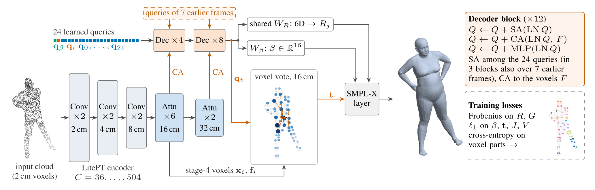

Abstract
Recovering 3D human pose and shape from point clouds is central to motion capture, robotics and self-driving vehicles, because depth cameras and LiDARs sense a person directly in metric 3D and work under any lighting. However, current approaches are each tailored to one sensor type: point density differs by more than ten times between devices, public datasets are labeled with incompatible body models, and LiDAR approaches need long input sequences to offset sparse scans. In this work, we present SparseHPS, a novel sensor-agnostic network that recovers SMPL-X pose, shape and global translation from a human point cloud with one set of weights, for single frames and streams alike. Specifically, SparseHPS encodes the cloud with a LitePT backbone over sparse voxels, represents every joint by a learnable query decoded with one common head, localizes the body by voting over voxels, and draws temporal context from a causal memory of tokens from the seven preceding frames. A single model is trained on ten datasets that mix rendered clouds with real depth-camera and LiDAR captures, all converted to one body model. Experiments demonstrate state-of-the-art results on the SLOPER4D and FreeMotion LiDAR benchmarks, where SparseHPS lowers the root-relative joint error by 22% and 11%, respectively, compared with the strongest prior method, which needs 32 frames. On real Azure Kinect captures of held-out HuMMan subjects, SparseHPS attains a joint error of 34.7 mm. Moreover, the current frame alone already yields the bulk of this accuracy.
Method

A LitePT encoder turns the cloud (2 cm voxels) into sparse voxel features. Twenty-four learned queries (shape, translation and one per joint) cross-attend to them in twelve decoder blocks; three blocks also attend to the queries of the seven preceding frames (a causal memory). A shared head maps every joint query to a rotation, voxels vote for the body position, and an SMPL-X layer gives the mesh. One set of weights serves single frames and streams. The output covers the 22 body joints of SMPL-X; hands and face are not estimated. SparseHPS-S is the single-frame model of the ablations (nine sources); SparseHPS-T, the model of all results and clips on this page, is trained on all ten sources and adds the memory.
Ten training sources, one body model
| Source | Sensor | Clouds |
|---|---|---|
| BEDLAM2 | rendered depth, clothed | 575k |
| AMASS | virtual Kinect, unclothed | 387k |
| CAPE | virtual Kinect, clothed scans | 32k |
| HuMMan | 10× Azure Kinect | 421k |
| EgoBody | 5× Azure Kinect | 168k |
| BEHAVE | 4× Azure Kinect | 45k |
| FORM-HOI | 4× stereo depth | 1,640k |
| FreeMotion | 3× LiDAR, static | 98k |
| SLOPER4D | LiDAR, moving | 23k |
| RELI11D | LiDAR, static | 22k |
All labels are converted to the neutral locked-head SMPL-X model with 16 shape coefficients.
Errors per sensor
![Figure 1 of the paper. Top: test samples from HuMMan (depth camera, 1.7k points), SLOPER4D (LiDAR, 0.8k points) and FreeMotion (LiDAR, 90 points): input, single-frame output of SparseHPS and ground truth. Bottom: radar chart of root-relative joint errors on six benchmarks, one line per method, lower errors closer to the centre. SparseHPS-T from one frame: SLOPER4D 28.9, FreeMotion 42.9, RELI11D 25.9, BEDLAM2 26.2, EgoBody 33.4 and HuMMan 34.7 mm, inside the lines of LiveHPS++, Sparkle, BMLiCap, LEIR, SAM 3D Body and MetricPose.](static/img/figure1.png)
Figure 1 of the paper.
Comparison with prior methods
LiDAR: SLOPER4D and FreeMotion
Prior methods read 32 frames of 256 points; SparseHPS-T reads all points of the current frame and at most seven earlier frames.

Table 2 of the paper. Numbers in brackets refer to the paper's references.
LiDAR: RELI11D (official protocol)

Table 4 of the paper. Numbers in brackets refer to the paper's references.
Depth camera: HuMMan (real Azure Kinect)

Table 3 of the paper. Numbers in brackets refer to the paper's references.
Depth camera: EgoBody (real Azure Kinect)

Table 6 of the paper. Numbers in brackets refer to the paper's references.
Rendered and stereo depth: BEDLAM2 and FORM-HOI

Table 5 of the paper. Numbers in brackets refer to the paper's references.
Every single-frame test set
| Test set | Clouds | MVE | PA-MVE | MPJPE | PA-MPJPE | JAE |
|---|---|---|---|---|---|---|
| AMASS | 15,336 | 13.0 | 9.8 | 16.4 | 11.1 | 4.5 |
| BEDLAM2 | 29,994 | 29.9 | 19.5 | 35.5 | 22.9 | 5.5 |
| CAPE | 4,946 | 24.3 | 18.9 | 29.8 | 21.9 | 15.2 |
| EgoBody | 121,714 | 47.2 | 29.3 | 55.4 | 35.7 | 8.3 |
| BEHAVE | 18,181 | 34.2 | 25.3 | 41.8 | 31.8 | 9.1 |
| HuMMan | 63,505 | 38.0 | 26.4 | 44.2 | 29.7 | 12.0 |
| FORM-HOI | 87,845 | 31.3 | 19.4 | 36.6 | 22.9 | 6.1 |
| SLOPER4D | 9,955 | 32.8 | 22.4 | 39.7 | 26.6 | 8.8 |
| FreeMotion | 32,630 | 68.5 | 33.0 | 78.6 | 41.7 | 6.4 |
| RELI11D | 3,597 | 29.5 | 22.1 | 38.3 | 29.4 | 6.6 |
SparseHPS-T on single frames, without history. Errors in mm (SMPL-X; MPJPE over 127 joints), JAE in degrees.
Estimates next to the ground truth
The same SparseHPS-T model on held-out test sequences of eight datasets, from dense Azure Kinect clouds to LiDAR scans of a few hundred points. Each clip shows the input cloud, the estimated SMPL-X body with the cloud drawn over it, and the label of the dataset.
Left: the input cloud (2 cm voxels, shaded by depth). Middle: the SparseHPS estimate, one per sensor frame, in the same metric frame as the cloud, so the points lie on the body where pose, shape and position are right. Right: the ground truth. The joint error is the mean over the 22 body joints of the clip, relative to the root joint. Walking and running figures are kept in place in the frame; the SLOPER4D clip is shown from the runner's front. Objects are not shown. Hands are not estimated and are shown in a fixed relaxed pose.
From a point cloud to a humanoid
Every clip runs the same SparseHPS-T model on a test sequence and hands its SMPL-X motion to a humanoid. NVIDIA's SOMA Retargeter maps the motion to a Unitree G1, and the robot is simulated in MuJoCo under NVIDIA's pretrained SONIC tracking policy: it has to keep its balance, and its feet rest on the floor through contact.
Left: the input cloud (2 cm voxels, shaded by depth). Middle: the SparseHPS estimate. Right: Unitree G1 simulated in MuJoCo, driven by the SONIC policy that tracks the SOMA Retargeter output. Clips were picked for variety of motion; the percentile tag tells where a clip's median vertex error falls within its test set (50 = typical, lower = easier). For the multi-camera sets (HuMMan, EgoBody, FORM-HOI) the camera facing the person was chosen; the SLOPER4D LiDAR follows the runner from behind, so that clip is shown from the runner's front. Walking figures are kept in place in the frame. Objects and furniture are neither shown nor simulated: in one EgoBody clip the person sits down on a chair and the robot, which has none, sits on the floor. Hands are not estimated and are shown in a fixed relaxed pose.
BibTeX
@article{zaychuk2026sparsehps,
title = {SparseHPS: A Unified Model for Human Pose and Shape Estimation across Depth Cameras and LiDARs},
author = {Zaychuk, Ilya},
journal = {arXiv preprint arXiv:2611.26730},
year = {2026}
}Datasets and acknowledgements
SparseHPS is trained on the ten datasets below; the demo clips show held-out sequences of the eight marked demo. All datasets belong to their authors and are used under their licenses for non-commercial research. Please cite them when you use this work.
- AMASS demo — N. Mahmood, N. Ghorbani, N. F. Troje, G. Pons-Moll, M. J. Black. AMASS: Archive of Motion Capture As Surface Shapes. ICCV 2019. doi · project · BibTeX of the AMASS subsets
- BEDLAM2 demo — J. Tesch, G. Becherini, P. Achar, A. Yiannakidis, M. Kocabas, P. Patel, M. J. Black. BEDLAM2.0: Synthetic Humans and Cameras in Motion. NeurIPS 2025 Datasets and Benchmarks. doi · project
- CAPE — Q. Ma, J. Yang, A. Ranjan, S. Pujades, G. Pons-Moll, S. Tang, M. J. Black. Learning to Dress 3D People in Generative Clothing. CVPR 2020. doi; and G. Pons-Moll, S. Pujades, S. Hu, M. J. Black. ClothCap: Seamless 4D Clothing Capture and Retargeting. ACM TOG (SIGGRAPH) 2017. doi · project
- HuMMan demo — Z. Cai et al. HuMMan: Multi-modal 4D Human Dataset for Versatile Sensing and Modeling. ECCV 2022. doi · project (S-Lab License 1.0)
- FreeMotion demo — Y. Ren, X. Han, C. Zhao, J. Wang, L. Xu, J. Yu, Y. Ma. LiveHPS: LiDAR-based Scene-level Human Pose and Shape Estimation in Free Environment. CVPR 2024. doi · project
- SLOPER4D demo — Y. Dai et al. SLOPER4D: A Scene-Aware Dataset for Global 4D Human Pose Estimation in Urban Environments. CVPR 2023. doi · project
- RELI11D demo — M. Yan et al. RELI11D: A Comprehensive Multimodal Human Motion Dataset and Method. CVPR 2024. doi · project
- EgoBody demo — S. Zhang et al. EgoBody: Human Body Shape and Motion of Interacting People from Head-Mounted Devices. ECCV 2022. doi
- BEHAVE — B. L. Bhatnagar, X. Xie, I. A. Petrov, C. Sminchisescu, C. Theobalt, G. Pons-Moll. BEHAVE: Dataset and Method for Tracking Human Object Interactions. CVPR 2022. doi
- FORM-HOI demo — NVIDIA. FORM-HOI: Foundry for Reconstruction from Multiview HOI. Dataset, v0.1.0, 2026. Hugging Face · licensed under CC BY 4.0; the demo shows point clouds made from its depth maps
SMPL-X
SMPL-X Body was used for character animation courtesy of the Max Planck Institute for Intelligent Systems. All human bodies on this page are SMPL-X meshes (G. Pavlakos, V. Choutas, N. Ghorbani, T. Bolkart, A. A. Osman, D. Tzionas, M. J. Black. Expressive Body Capture: 3D Hands, Face, and Body from a Single Image. CVPR 2019, doi); their pose and shape are estimated by SparseHPS. SMPL-X is used under the SMPL-X Model License; SMPL-X Body is licensed under CC BY 4.0 (terms).
Robot, retargeting and rendering
Retargeting: SOMA Retargeter and SOMA-X (Apache 2.0) — J. Saito et al. SOMA: Unifying Parametric Human Body Models. arXiv:2603.16858, 2026. Physics: the SONIC whole-body controller from GR00T-WholeBodyControl (code Apache 2.0; model licensed by NVIDIA Corporation under the NVIDIA Open Model License) — Z. Luo et al. SONIC: Supersizing Motion Tracking for Natural Humanoid Whole-Body Control. arXiv:2511.07820, 2025; simulated in MuJoCo (Apache 2.0). Robot model: Unitree G1 from unitree_ros, © Unitree Robotics, BSD-3-Clause; its use here does not imply endorsement by Unitree Robotics. Rendering: NVIDIA Isaac Sim.